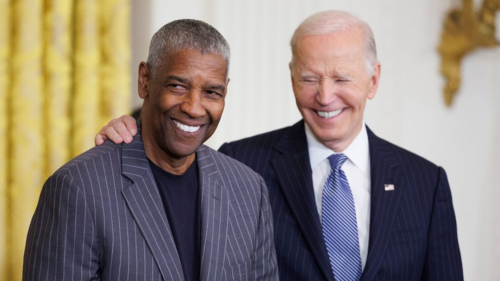
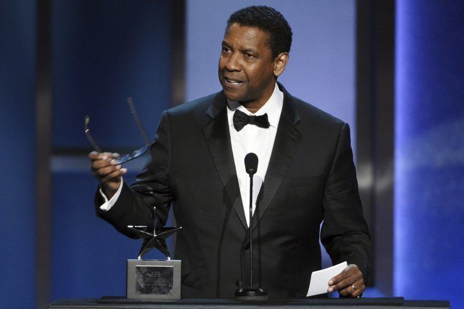
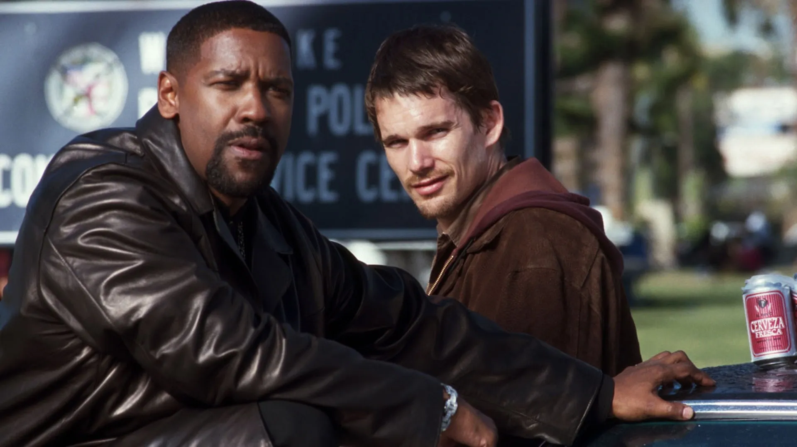

Presidential Medal of Freedom 2024

Denzel Washington received the Presidential Medal of Freedom from President Joe Biden during a January 4 ceremony at the White House, where he was described as a generational talent and national role model.
“The admiration of audiences and peers is only exceeded by that of the countless young people he inspires,” the White House citation read. “With unmatched dignity, extraordinary talent, and unflinching faith in God and family, Denzel Washington is a defining character of the American story.”
Washington was one of 19 “truly extraordinary people” Biden recognized for “their sacred effort to shape the culture and the cause of America.” World Central Kitchen founder José Andrés, former Secretary of State Hillary Clinton, and primatologist Jane Goodall were among the other honorees.
BET Award for Best Actor

The BET Award for Best Actor is awarded to actors from both television and film. Some nominees have been nominated based on their performances in multiple bodies of work within the eligibility period. Denzel Washington holds the record for most wins in this category with four
Denzel Washington holds the record for the most wins and nominations in the history of the BET Award for Best Actor. He has won the award five times, taking home the honor in 2001, 2004, 2008, 2024, and 2025
Denzel Washington's Winning Roles2025: Won for his continued excellence in film (notably for The Equalizer 3)2024: Won for The Equalizer 32008: Won for American Gangster and The Great Debaters2004: Won for Out of Time2001: Won for Remember the Titans (the inaugural year of the award)
MTV Movie Award for Best Villain 2002

Denzel Washington won the MTV Movie Award for Best Villain in 2002 for his iconic portrayal of the corrupt LAPD narcotics Detective Alonzo Harris in the crime thriller Training Day.His menacing performance in the film also earned him the Academy Award for Best Actor at the 74th Oscars.
He was additionally nominated in the Best Villain category at the 2008 MTV Movie Awards for his role as drug kingpin Frank Lucas in American Gangster.